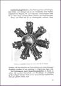
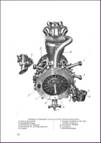
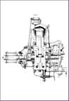
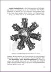
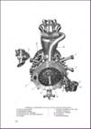
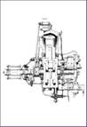

Siemens Flugmotorenwerk /BRAMO
Siemens Jupiter VI
29,00€
Dateigröße: 93 Seiten
Handbuch für die Wartung und Instandsetzung, 93 Seiten, 1929.
Bestell-Nr.: LAH-341
Siemens Sh 10, Sh 11, Sh 12
29,00€
 





Dateigröße: 105 MB
Kompendium, gesamt 177 Seiten, bestehend aus:
Sh 10, Sh 11 und Sh12, Beschreibung, Betriebs-Vorschriften und Montage, 1928
Sh 10, Sh 11 und Sh12, Ersatzteilliste, 1928
Sh 12, Sh 13 und Sh 14. Handbuch für die Wartung und Instandhaltung, 1929
Bestell-Nr.: LAH-339
Siemens Sh 13
29,00€
Dateigröße: 155 MB
Kompendium, gesamt 215 Seiten, bestehend aus:
Sh 12, Sh 13 und Sh 14. Handbuch für Wartung und Instandhaltung, 1929
Sh 13 A und Sh 14 A, Betriebshandbuch, 1933
Sh 13 A Ersatzteilliste, 75/88 PS, 1933
Sh 13 A, farbiger Prospekt
Bestell-Nr.: LAH-340
Siemens Sh 14 A
29,00€
Dateigröße: 100 MB
Kompendium, gesamt 355 Seiten, bestehend aus:
Sh 14 A4, Betriebshandbuch, 1937
Sh 14 A4, Betriebsvorschriften 1936
Sh 14 A4, Ersatzteilliste, 1937
Werksprospekt Sh 14 A
Werksprospekt Sh 14 A4
Bestell-Nr.: LAH-219
BRAMO – SAM 22, SAM 322, 323 FAFNIR
49,00€
Dateigröße: 931 MB
Kompendium, gesamt 2.070 Seiten, bestehend aus:
SAM 22 B3, 322 H1 und 322 J1. Betriebshandbuch. 1936
SAM 322 H2 - J2 Anleitung für Behandlung und Betrieb, 1940
SAM 322, Die deutschen Flugmotoren, Band 19 Luftfahrt-Lehrbücherei, 1940
BRAMO FAFNIR 323 A-D, Betriebsvorschrift, 1937
BRAMO FAFNIR 323 A-D und Q, Betriebs- und Wartungsvorschrift, 1939
BRAMO FAFNIR 9-323 A2 und Q2, Ersatzteilliste, 1941
BRAMO FAFNIR 323 A-D, P, Q und R, Lehrbildreihe
BRAMO FAFNIR 9-323 P, Ersatzteilliste, 1940
BRAMO FAFNIR 323 P, Baureihe 1, Betriebs- und Wartungsvorschrift, 1939
BRAMO FAFNIR 323 P, Betriebs- und Wartungsvorschrift, 1940
BRAMO FAFNIR 323 R, Betriebs- und Wartungsvorschrift 1941
Bestell-Nr.: LAH-1044-1